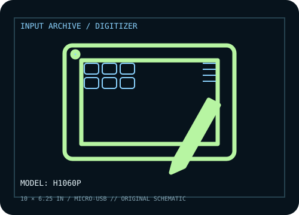

[ PEN TABLETS AND DIGITIZERS // IDENTIFIED COMPONENT ]
Huion Inspiroy H1060P
Large non-display Inspiroy tablet with hard and touch-sensitive shortcut controls and a passive stylus.

MODEL IDENTIFICATION: Manufacturer model / identifier: H1060P. Confirm the unit label, bundle contents, regional suffix, and revision against its product documentation before compatibility or repair work.
Model specifications
| Catalog subcategory | Pen tablets and digitizers |
|---|---|
| Exact model / SKU | H1060P |
| Active area | 254 × 158.8 mm (10 × 6.25 in) active area. |
| Pressure and pen technology | 8,192 pressure levels; battery-free PW100 electromagnetic-resonance pen with tilt response. |
| Resolution / report rate | 5,080 lpi digitizer resolution and >220 PPS report rate are specified by Huion for this model. |
| Interface | Micro-USB wired connection; Android use requires a supported device/adapter and compatible orientation. |
| Driver, OS and compatibility | Huion lists Windows, macOS, Android, and Linux support; install the matching HuionTablet driver on desktop systems and verify Android OTG/USB compatibility on the target device. |
| Power | USB bus-powered; passive PW100 pen requires no battery or charging. |
| Calibration and service notes | Set the correct monitor mapping and active-area proportions in HuionTablet; test pressure response in the driver before an art application. |
Preservation and service notes
USB bus-powered; passive PW100 pen requires no battery or charging. Set the correct monitor mapping and active-area proportions in HuionTablet; test pressure response in the driver before an art application.
Record the as-found model label, accessories, host OS, driver/firmware version, calibration state, and test method. Published capability does not guarantee compatibility with a particular application or individual used unit.
Manufacturer sources
- Inspiroy H1060P — HuionManufacturer model page for active area, stylus and tablet controls.
- Huion download centerManufacturer source for model-specific driver and user manual; select H1060P and target OS.
Manufacturer product and support pages can change. Save the applicable manual/driver release notes and verify the exact model and revision at setup.